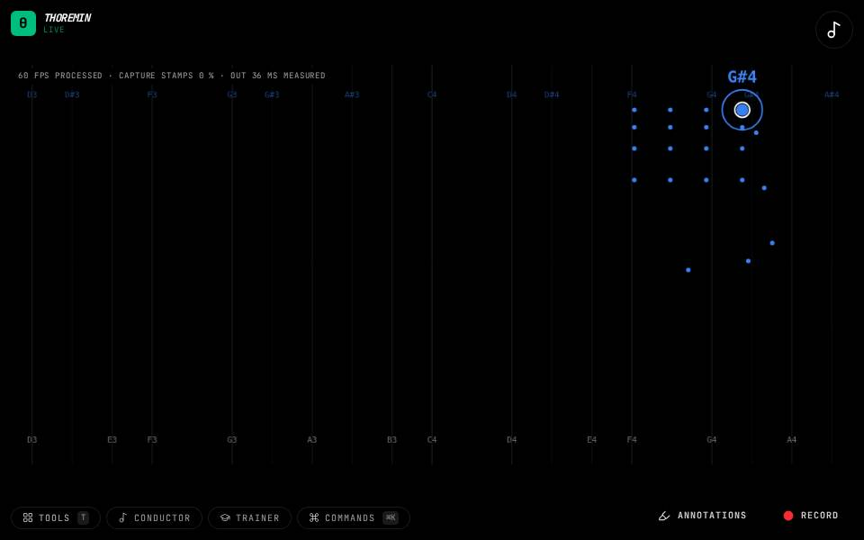

Instruments › Field instruments
Split Voices

What to do
- Raise both hands.
- The right hand plays one sound, the left hand another.
- Move each hand on its own.
Two different instruments, one in each hand.
How it works
Each hand is a voice with its own scale, sound and range. In Sound, "Sync with right" makes the left voice copy the right; switch it off to give them different sounds.
Its settings: Sound. Every knob: the manual.